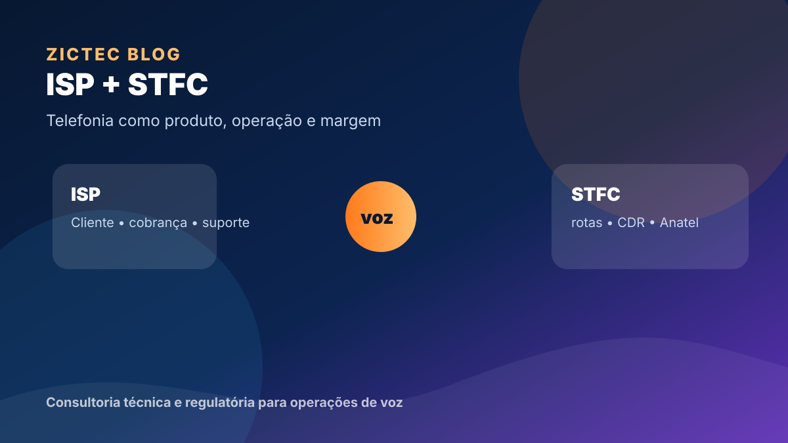

Telefonia pode aumentar margem — ou virar uma fonte silenciosa de custo.
Para o ISP regional, telefonia fixa costuma parecer uma oportunidade natural: a empresa já tem cliente, cobrança, suporte, infraestrutura IP e presença local. Mas voz não é apenas mais um serviço no combo. É uma operação com responsabilidades próprias: autorização, numeração, interconexão, portabilidade, bilhetagem, atendimento, disponibilidade e obrigações regulatórias.
O ponto central não é “ter ou não ter STFC”. É saber se a operação está preparada para vender, entregar, medir e sustentar telefonia sem depender de improviso.
Quando a telefonia faz sentido para um provedor
- Base empresarial ativa: clientes B2B pedem telefone fixo, PABX, portabilidade, ramais, atendimento e continuidade.
- Necessidade de aumentar ARPU: voz pode complementar conectividade, especialmente em contas corporativas.
- Capacidade de operação: existe time ou parceiro para tratar SIP, CDR, rotas, portabilidade, incidentes e relatórios.
- Estratégia comercial clara: telefonia é vendida como solução, não como “mais um item barato”.
Onde muitos provedores erram
O erro mais comum é tratar telefonia como revenda simples. A venda acontece, mas depois surgem chamados sobre áudio unilateral, chamadas que não completam, portabilidade parada, divergência de cobrança, falhas de PABX, problemas de rota e dúvidas regulatórias. Sem processo, isso consome margem.
Checklist mínimo antes de escalar vendas
- Modelo de autorização e escopo de serviço.
- Arquitetura de softswitch, SBC, rotas e interconexões.
- Processo de portabilidade e cadastro de numeração.
- Bilhetagem confiável e conciliação de tráfego.
- Rotina de suporte com logs, testes e responsáveis.
- Controle de obrigações Anatel, QEML, DETRAF e evidências quando aplicável.
O gancho comercial correto
Antes de investir em campanha de telefonia, o provedor deveria fazer um diagnóstico curto: onde está a margem, onde está o risco e quais rotinas precisam existir para a operação não vender prejuízo. A ZICTEC pode apoiar essa leitura e estruturar o caminho técnico, regulatório e operacional.